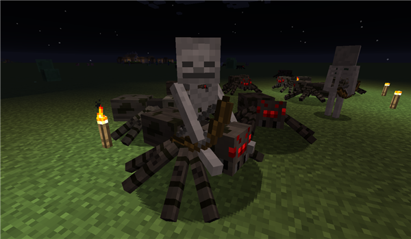
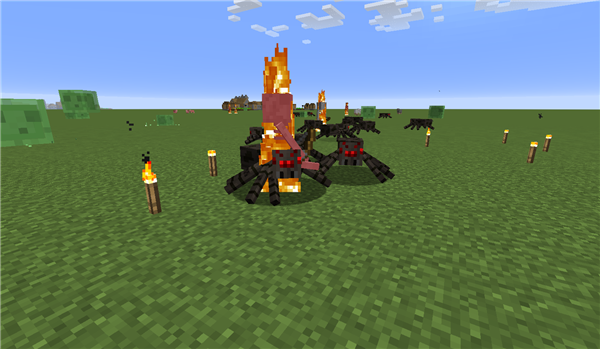
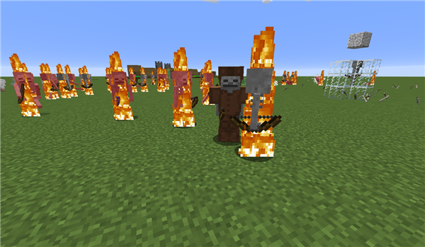
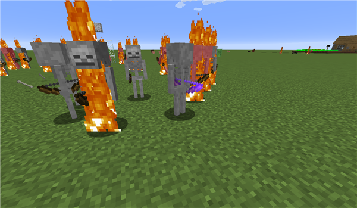
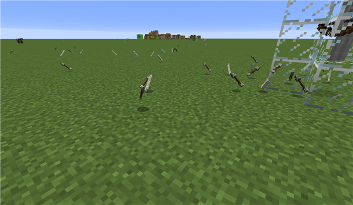
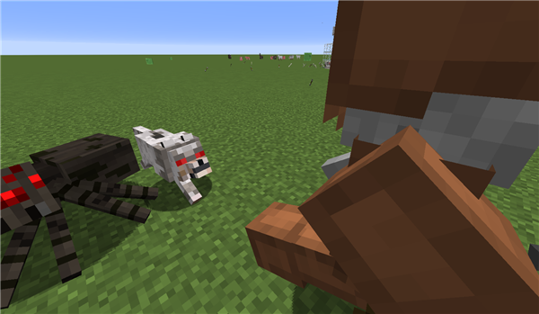

【小白攻略】敌对生物之骷髅射手篇
2019-12-03 作者：矮人
大家好啊！这里是喜欢捕捉小怪兽的攻略君！在不久之前，我捕捉了《我的世界》中五种最常见的会骚扰小伙伴们的坏家伙，并且逐一为大家分析它们的特点与弱点，好让小伙伴们在日常的生活中可以避开或者克服他们的骚扰。今天，攻略君将会为大家带来最后一个坏家伙的分析——它就是专注于将你射下山崖，偶尔还会与其他坏家伙打打闹闹，潜伏在阴影中的骷髅射手！
首先让我们先看一下骷髅射手先生的样子吧！骷髅射手先生瘦骨嶙峋，通体苍白，但千万不要因为外表而小瞧它们！它们会围绕着你进行游击战术，在几十步之外就轻松的把你射成刺猬，还会主动拉开与你的距离，是非常烦人的敌人。与僵尸类似，它们也具有亡灵特性——这导致他们会被治疗喷溅药水所伤害，还会因为阳光而被点燃。

而且，他们和蜘蛛还会合体成可怕的骷髅骑士！这些骷髅会骑着蜘蛛来寻找你，蜘蛛负责扑击，骷髅则负责将你射倒。如果在深夜不幸遇到了这一对组合，那么可能等待你的将会是一场痛苦的战斗。
在夜间生成的骷髅骑士
不过，有趣的是，白天蜘蛛并不会因为有骷髅射手骑着它们就变得凶暴起来，而骷髅射手也不会因为骑在蜘蛛上而变得免疫阳光，因此，这一对组合在白天变得异常乏力——蜘蛛对你没什么兴趣，而骷髅射手很快则会被阳光灼烧致死。
燃烧的骷髅骑士，骷髅射手并没有因为骑在蜘蛛上而免疫阳光
此外，如果骷髅射手的箭不小心在瞄准你的时候射中了其他生物，那么它们两者之间就会爆发出一场战斗！悄悄告诉你：有一张原版的唱片掉落就与这个事情有关哦。至于如何让骷髅射手的箭射中其他生物，这就是需要小伙伴动脑的事情了。
骷髅射手也像僵尸一样，会穿戴装备，因此偶尔你也会看到因为身穿盔甲而没有被燃烧的骷髅射手，甚至是带有附魔弓箭的骷髅射手，这些骷髅射手和我们一样，会利用手上与身上的装备，因此对待这些穿着豪华的骷髅射手的时候，一定要万分小心！
穿着皮革铠甲套装的骷髅射手
带有附魔弓的骷髅射手
自然死亡的骷髅射手（因为阳光而燃烧致死）会掉落箭只与骨头，骨头可以用来驯化狼，研磨而成的骨粉也是非常好的作物养料。如果被我们击杀，那么骷髅射手的弓就会有一定概率掉落。因此，如果发现夜晚出现了带有附魔弓的骷髅射手的话，小伙伴们不妨考虑一下如何击杀它们来获取附魔弓哦。
骷髅射手白天燃烧死亡后的掉落物，可以看到没有任何一把弓
最后，如果我们不想看到骷髅射手，应该如何应对它们呢？答案就是，养狼就好了！没错，狼不仅仅喜欢骨头，而且对于身体全是骨头的骷髅射手也情有独钟，无论是否被驯化，狼都会主动对骷髅射手发动攻击，而骷髅射手则会慌不择路的逃跑。如果小伙伴们想要在住所驱逐骷髅射手，养几只狼是最好的选择。
对骷髅射手主动发动攻击的野狼：可以看到狼并没有对蜘蛛发动攻击，而是专注于骷髅射手
以上便是本次攻略的全部内容，不知道诸位小伙伴是否更好的了解了骷髅这一敌对生物呢？随着本篇攻略的结束，我们最常见的五种敌对生物的介绍也就完成了！攻略君会在接下来的内容中为大家说明如何利用这些怪物来高效的获取资源，这里是攻略君，祝大家在《我的世界》中度过美好的一天，让我们下次再见！